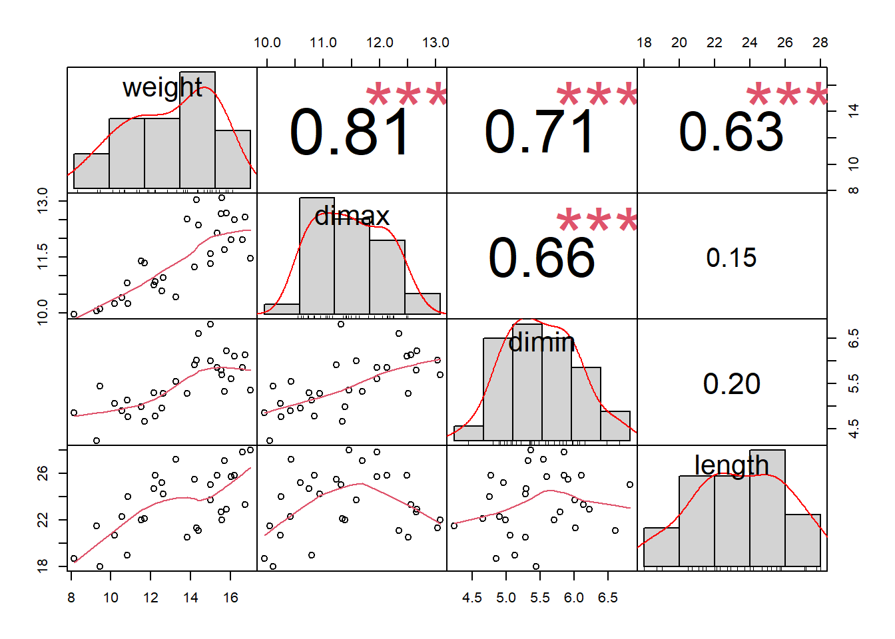
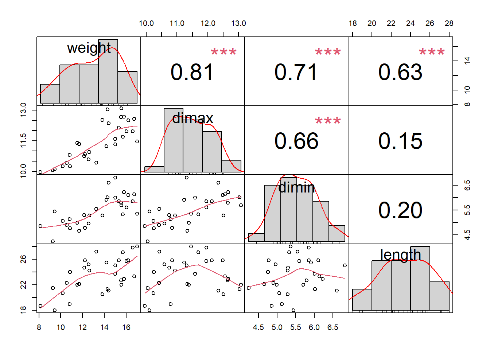

cor_ok <- readRDS("cor_ok.rds")
cor_ok <- as.matrix(cor_ok)
cor_ok weight dimax dimin length
[1,] 13.82 12.51 5.28 20.5
[2,] 15.02 11.31 6.82 25.0
[3,] 17.00 11.46 5.36 28.0
[4,] 9.29 10.05 4.24 21.5
[5,] 15.00 11.59 6.01 23.7
[6,] 14.30 13.03 6.02 21.3
[7,] 15.72 11.69 5.32 27.1
[8,] 10.56 10.41 4.90 22.3
[9,] 16.74 12.56 6.13 23.3
[10,] 8.16 9.95 4.85 18.7
[11,] 12.56 10.59 4.96 25.2
[12,] 12.62 10.94 5.28 24.2
[13,] 14.41 12.35 6.60 21.1
[14,] 12.23 10.84 4.78 25.8
[15,] 12.15 10.75 5.29 24.7
[16,] 10.83 10.79 5.13 19.0
[17,] 16.60 11.96 5.85 27.8
[18,] 15.81 12.67 6.22 22.9
[19,] 15.35 12.13 5.85 25.8
[20,] 16.05 11.95 5.60 25.7
[21,] 11.70 11.34 4.66 22.1
[22,] 14.19 11.23 5.91 25.5
[23,] 11.54 11.39 4.99 22.0
[24,] 15.54 12.65 5.79 22.7
[25,] 13.27 10.43 5.55 27.2
[26,] 10.19 10.24 5.06 20.7
[27,] 9.45 10.11 5.44 18.0
[28,] 15.57 13.08 5.70 22.0
[29,] 16.22 12.49 6.10 25.8
[30,] 10.87 10.25 4.76 24.0library("PerformanceAnalytics")Warning: package 'PerformanceAnalytics' was built under R version 4.4.1Loading required package: xtsWarning: package 'xts' was built under R version 4.4.1Loading required package: zoo
Attaching package: 'zoo'The following objects are masked from 'package:base':
as.Date, as.Date.numeric
Attaching package: 'PerformanceAnalytics'The following object is masked from 'package:graphics':
legendPerformanceAnalytics:::chart.Correlation(
R = cor_ok,
histogram = TRUE,
method = "pearson"
)Warning in par(usr): argument 1 does not name a graphical parameterWarning in par(usr): argument 1 does not name a graphical parameter
Warning in par(usr): argument 1 does not name a graphical parameter
Warning in par(usr): argument 1 does not name a graphical parameter
Warning in par(usr): argument 1 does not name a graphical parameter
Warning in par(usr): argument 1 does not name a graphical parameter
# trace(PerformanceAnalytics:::chart.Correlation, edit = TRUE)
chart.Correlation_check <- function(R, histogram = TRUE, method = c(
"pearson", "kendall",
"spearman"
), cex_text = 3, cex_sign = 3, ...) {
x <- checkData(R, method = "matrix")
if (missing(method)) {
method <- method[1]
}
cormeth <- method
panel.cor <- function(
x, y, digits = 2, prefix = "", use = "pairwise.complete.obs",
method = cormeth, cex_text_ok = cex_text, cex_sign_ok = cex_sign, ...) {
par(usr = c(0, 1, 0, 1))
r <- cor(x, y, use = use, method = method)
txt <- format(c(r, 0.123456789), digits = digits)[1]
txt <- paste(prefix, txt, sep = "")
test <- cor.test(as.numeric(x), as.numeric(y), method = method)
Signif <- symnum(test$p.value,
corr = FALSE, na = FALSE,
cutpoints = c(0, 0.001, 0.01, 0.05, 0.1, 1), symbols = c(
"***",
"**", "*", ".", " "
)
)
text(0.5, 0.5, txt, cex = cex_text_ok)
text(0.8, 0.8, Signif, cex = cex_sign_ok, col = 2)
}
f <- function(t) {
dnorm(t, mean = mean(x), sd = sd.xts(x))
}
dotargs <- list(...)
dotargs$method <- NULL
rm(method)
hist.panel <- function(x, ... = NULL) {
par(new = TRUE)
hist(x,
col = "light gray", probability = TRUE, axes = FALSE,
main = "", breaks = "FD"
)
lines(density(x, na.rm = TRUE), col = "red", lwd = 1)
rug(x)
}
if (histogram) {
pairs(x,
gap = 0, lower.panel = panel.smooth, upper.panel = panel.cor,
diag.panel = hist.panel
)
} else {
pairs(x, gap = 0, lower.panel = panel.smooth, upper.panel = panel.cor)
}
}
chart.Correlation_check(
R = cor_ok,
histogram = TRUE,
method = "pearson",
cex_text = 3,
cex_sign = 3
)